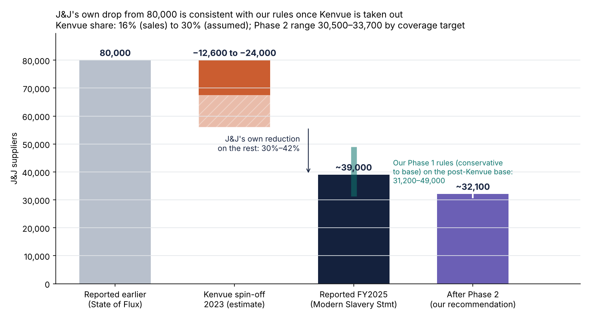
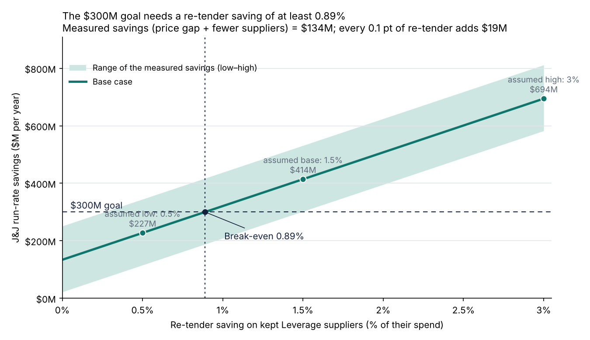
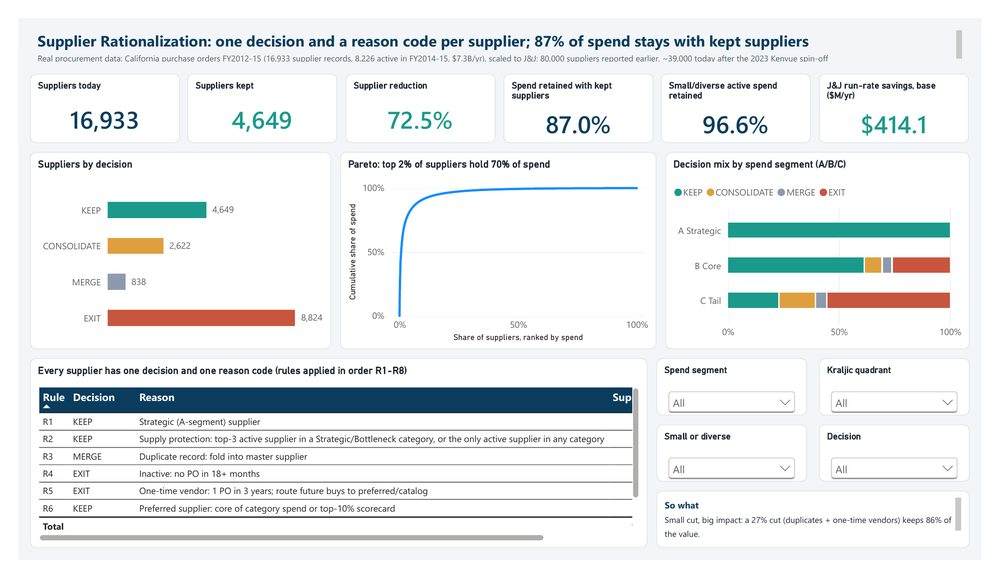
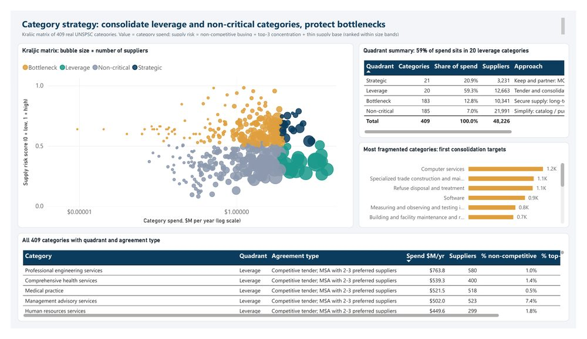
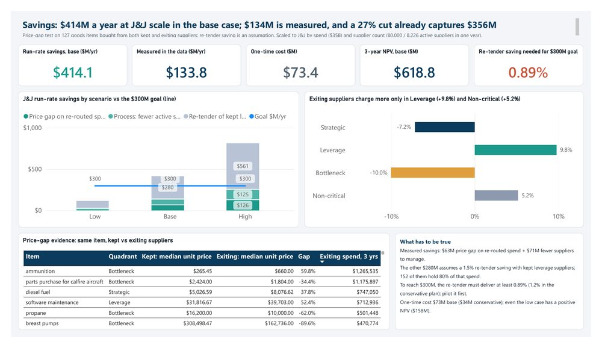
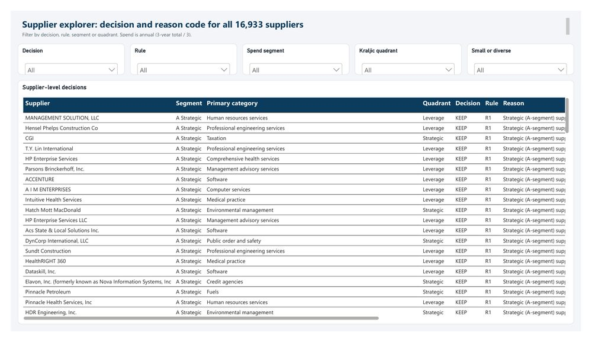

Supplier rationalization: fewer suppliers, stronger agreements.
J&J has gone from a reported 80,000 suppliers to about 39,000. How much of that is real rationalization, could a rule-based model have made those calls, and how far could it go next?
Key results
- 30–42%J&J’s own reduction to ~39,000 once the Kenvue spin-off is taken out; our rules produce a cut of that size
- ~32,100suppliers after the Phase 2 category model, from ~39,000 today, without adding dominant-supplier categories
- $134Ma year measured in the data at J&J scale ($414M in the base case, which assumes a 0.89% re-tender saving)
J&J’s supplier count over time
| When | What was reported |
|---|---|
| After 2014 (undated) | 80,000 suppliers, as procurement became one enterprise function (State of Flux case study) |
| 2023 | Consumer health separated as Kenvue: IPO in May, separation completed 23 August. Its suppliers left with it. |
| 2024 | 29,000+ suppliers (Health for Humanity Report) |
| FY2025 | ~39,000 suppliers, after a change in how spend is classified (Modern Slavery Statement) |
Kenvue publishes no supplier count, so its share is estimated: 15.7% if in line with its share of J&J’s 2022 sales, 30% as a high case. That leaves 56,000–67,400 J&J suppliers, and a reduction of 30–42% to reach ~39,000. Applied to that base, this project’s rules give 31,200–49,000: J&J’s own reduction is the size the method produces. That does not show J&J used these rules, only that a cut of that size can be made with a reason behind every decision.

What carries over to J&J, and what doesn’t
| Carries over: the method | Does not carry over: the exact numbers |
|---|---|
| Cleaning raw spend into addressable spend, with a reason code on every excluded line | The category mix: state purchasing is fuel, construction, IT and services; J&J buys APIs, device components, lab supplies and contract manufacturing |
| Pareto / ABC segmentation and the spend cube | Prices, and the measured price gaps (9.8% in Leverage, 5.2% in Non-critical) |
| The Kraljic matrix and one agreement type per quadrant | The shares behind the scaling: 44% fewer active suppliers, 87% of spend kept, $414M a year |
| Duplicate detection, the scorecard and keep / exit rules R1–R8 | Supply risk: validated, regulated manufacturing makes switching far slower and costlier at J&J |
| The checks: concentration, sole-source protection, duplicate precision, tests | Public-sector rules, such as small-business set-asides, that shape California’s supplier base |
So the J&J figures show the size of the opportunity if the same patterns hold, not a forecast. The first step with J&J’s own data would be to re-run the pipeline on its spend cube.
Before and after
On the real purchase-order data, counting one year of active suppliers, the same basis as J&J’s reported counts.
- Suppliers active in a yearFY2014–15, the basis of J&J’s counts
- After Phase 2category model, 90% coverage
- Categories dominated by one suppliertop supplier holds over 50% of spend
Phase 1 tiers: conservative −27% (merge duplicates, move one-time vendors to a catalog), base −44% (also consolidate within Leverage and Non-critical categories), aggressive −52%. Moving a one-time vendor to a catalog keeps it available to buyers; procurement just stops managing it individually.
J&J (reported and modeled)
- J&J suppliersreported, part Kenvue spin-off
- J&J suppliers, Phase 2our recommendation
- Run-rate savings per yearbase case; range $115M–$811M
Savings: $63M measured price gap + $71M from managing fewer suppliers (scaled from 80,000) + $280M assumed from re-tendering kept Leverage suppliers. One-time cost $73M; 3-year NPV $619M at 8%.
How much rests on the assumption
$280M of the $414M base case is the re-tender saving on kept Leverage suppliers, which the data cannot measure. Each 0.1 point of re-tender saving adds about $19M a year, so the claim becomes testable: the $300M goal needs at least 0.89% (0.26–1.49% across the range of measured savings). A first sourcing wave under the MSA’s benchmark clause shows whether that holds before the rest is committed.

Phase 2: going further from ~39,000
After the blanket rules, most remaining suppliers are legitimate, so Phase 2 uses a different model: a target count per category. Keep the fewest suppliers that cover 90% of the category’s spend, with at least two in Strategic and Bottleneck categories; always keep strategic, sole-source and small or diverse suppliers. Everyone else moves volume to the category’s core suppliers or the catalog.
| Spend coverage target | Reduction | J&J suppliers |
|---|---|---|
| 80% | −22% | ~30,500 |
| 85% | −20% | ~31,000 |
| 90% (recommended) | −18% | ~32,100 |
| 95% | −14% | ~33,700 |
Only 1.5% of the year’s spend changes supplier, and the number of categories dominated by one supplier does not change (161 of 382). Phase 2 is about fewer relationships to manage and audit, about $14M a year at $2,000 per supplier, not big price savings: the easy reductions were Phase 1.
Does consolidation add supply risk?
Yes, a little, and it is measured. Moving volume to fewer suppliers raises concentration, so I counted the categories where one supplier holds more than half the active spend, before and after the decisions.
| Top supplier > 50% of spend | Before | After |
|---|---|---|
| All categories (406) | 129 | 136 |
| Strategic | 9 | 9 |
| Leverage | 0 | 0 |
| Bottleneck | 95 | 99 |
| Non-critical | 25 | 28 |
Ten categories newly cross 50%, worth $64M over three years (0.3% of active spend); they go on a watch-list and get a second-source clause. Every sole-source supplier is kept: the first version of the rules let one sole supplier be consolidated, a test caught it, and rule R2 was fixed.
Checking the duplicate matching
70 accepted pairs were checked by hand, using the names, ZIP code, main category and department. Exact name matches were right 20 of 20 times; fuzzy matches (similarity 0.88–0.99) 39 of 50 times. That is about 96% precision overall but 78% in the fuzzy band, with errors like “United Rentals” vs “United Van Rentals”. So exact matches merge automatically and fuzzy matches go to a review queue first. They touch 0.6% of spend.
Power BI dashboard
A 4-page Power BI report built on the project’s outputs: 9 tables, 6 relationships and 21 DAX measures, generated as a Power BI project file and checked in Power BI Desktop. Click any page to see it full size.




Recommendation
Phase 1, the tail first: merge duplicate records and move one-time vendors to catalogs (low risk, pays back on process savings alone). Then consolidate within Leverage and Non-critical categories, where the price gap exists, and re-tender them under volume-tiered MSAs. Leave Strategic and Bottleneck categories out of consolidation. Phase 2: set a target count per category (90% spend coverage, at least two suppliers where supply is risky). Never cut a strategic or sole-source supplier; put them on partnership MOUs and add second sources for bottleneck items. Approve the re-tender only once the first MSAs show the 0.89% saving the base case needs.
How each supplier was decided
| Rule | Decision | Suppliers | 3-yr spend |
|---|---|---|---|
| R1 Strategic (top 70% of spend) | Keep | 327 | $15.3B |
| R2 Top-3 in a strategic / bottleneck category, or sole source | Keep | 375 | $730M |
| R6 Preferred: core of category or top-10% score | Keep | 1,781 | $2.4B |
| R7 Small / diverse guardrail | Keep | 2,166 | $567M |
| R3 Duplicate record (ML name match) | Merge | 838 | $341M |
| R8 Volume moves to preferred suppliers | Consolidate | 2,622 | $567M |
| R4 Inactive 18+ months | Exit | 5,614 | $1.3B |
| R5 One-time vendor | Exit | 3,210 | $637M |
Counts are every supplier record over three years; the annual view above is what scales to J&J. Rules run in order, so a strategic supplier can never be caught by an exit rule. Only $1.2B over three years actually has to move to another supplier.
Savings at J&J scale
| $M per year | Low | Base | High |
|---|---|---|---|
| Price gap on re-routed spend (measured) | 0 | 63 | 126 |
| Fewer suppliers to manage (scaled from 80,000) | 22 | 71 | 125 |
| Re-tender of kept leverage suppliers (assumed) | 93 | 280 | 561 |
| Run-rate savings | 115 | 414 | 811 |
| 3-year NPV (8%, ramp 30/70/100%) | 158 | 619 | 1,265 |
The finding that changed the plan
My first top-down estimate was $385M a year. The price-gap test on 127 goods items bought from both kept and exiting suppliers showed exiting suppliers charged 9.8% more in Leverage and 5.2% more in Non-critical categories, but were cheaper in Bottleneck (−10%) and Strategic (−7%) ones. So price savings only exist where the market is competitive, only $134M of the base case is measured, and the plan pushes price only in Leverage and Non-critical categories.
Real J&J suppliers
Read from the suppliers’ own SEC 10-K filings. Alkermes is the exclusive maker of RISPERDAL CONSTA; MeiraGTx manufactures J&J’s RPGR gene therapy under a 4+1-year supply agreement; Mersana’s clinical supply deal gives J&J a technology-transfer right. Emergent is the counter-example: J&J ended its COVID-19 vaccine contract in 2022 over manufacturing problems, which is why the rules protect sole-source and bottleneck suppliers.
Method
344,504 raw purchase-order lines cleaned in Python and SQLite, every raw row kept with its outcome and reason code. Spend cube and Pareto / ABC segmentation in SQL window functions; a Kraljic matrix of 409 categories; duplicate suppliers found with TF-IDF character n-grams and cosine similarity (scikit-learn); a weighted scorecard and rules R1–R8 for the keep / consolidate / exit decision; a measured price-gap test and low / base / high savings scenarios; a back-test against J&J’s reported counts with the Kenvue spin-off taken out; and a Phase 2 category target model. Results go to an Excel workbook with live formulas, a Power BI dashboard, a business case and agreement templates (MOU, MSA, supply agreement, catalog terms, transition notices). Twenty-one tests check that strategic and sole-source suppliers are never exited, that every supplier and raw row has a reason code, and that totals reconcile from the raw file to the decisions.
Limitations
Public-sector purchasing is a proxy for J&J’s spend, so category mix and prices differ; J&J figures are scaled, not measured. $280M of the $414M base case is an assumption about re-tender savings. J&J’s 80,000 figure is undated, Kenvue’s supplier share is estimated, and the FY2025 count uses a new counting method. Supplier quality, risk scores and contract terms were not available; the price gap uses goods only. Small/diverse status comes from California certifications. Duplicate precision rests on a 70-pair hand check.